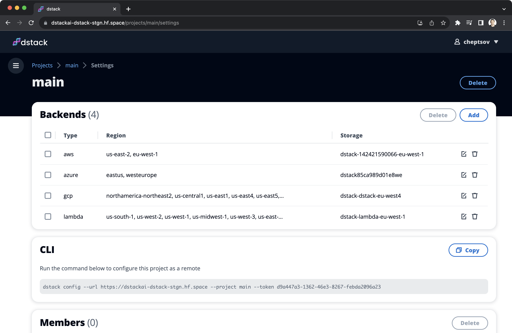

dstack 0.11.0: Multi-cloud and multi-region projects¶
The latest update now automatically finds the cheapest GPU across clouds and regions.
The latest release of dstack enables the automatic discovery of the best GPU price and availability across multiple
configured cloud providers and regions.
Multiple backends per project¶
Now, dstack leverages price data from multiple configured cloud providers and regions to automatically suggest the
most cost-effective options.
$ dstack run . -f llama-2/train.dstack.yml --gpu A100
Configuration llama-2/train.dstack.yml
Min resources 2xCPUs, 8GB, 1xA100
Max price no
Spot policy auto
Max duration 72h
# BACKEND RESOURCES SPOT PRICE
2 lambda 30xCPUs, 200GB, 1xA100 (80GB) yes $1.1
3 gcp 12xCPUs, 85GB, 1xA100 (40GB) yes $1.20582
1 azure 24xCPUs, 220GB, 1xA100 (80GB) yes $1.6469
...
Continue? [y/n]:
The default behavior of dstack is to first attempt the most cost-effective options, provided they are available. You
have the option to set a maximum price limit either through max_price in .dstack/profiles.yml or by using
--max-price in the dstack run command.
To implement this change, we have modified the way projects are configured. You can now configure multiple clouds and regions within a single project.

Why this matter?
The ability to run LLM workloads across multiple cloud GPU providers allows for a significant reduction in costs and an increase in availability, while also remaining independent of any particular cloud vendor.
We hope that the value of dstack will continue to grow as we expand our support for additional cloud GPU providers.
If you're interested in a specific provider, please message us on Discord.
Custom domains and HTTPS¶
In other news, it is now possible to deploy services
using HTTPS.
All you need to do is configure a wildcard domain (e.g., *.mydomain.com), point it to the gateway IP address, and then
pass the subdomain you want to use (e.g., myservice.mydomain.com) to the gateway property in
YAML (instead of the gateway IP address).
Other changes¶
.dstack/profiles.yml¶
- The
projectproperty is no longer supported. - You can now use
max_priceto set the maximum price per hour in dollars.
dstack run¶
Using the dstack run command, you are now able to utilize options such as --gpu, --memory, --env, --max-price,
and several other arguments to override the profile settings.
Lastly, the local backend is no longer supported. Now, you can run everything using only a cloud backend.
The documentation is updated to reflect the changes in the release.
Migration to 0.11
The dstack version 0.11 update brings significant changes that break backward compatibility. If you used prior dstack
versions, after updating to dstack==0.11, you'll need to log in to the UI and reconfigure clouds.
We apologize for any inconvenience and aim to ensure future updates maintain backward compatibility.
Give it a try¶
Getting started with dstack takes less than a minute. Go ahead and give it a try.
$ pip install "dstack[aws,gcp,azure,lambda]" -U
$ dstack start